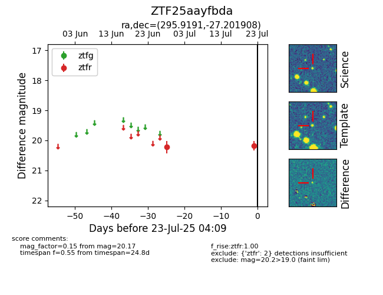

Target ZTF25aayfbda at 2025-07-23 12:37, see:
FINK: fink-portal.org/ZTF25aayfbda
Lasair: lasair-ztf.lsst.ac.uk/objects/ZTF25aayfbda
ALeRCE: alerce.online/object/ZTF25aayfbda
alt names
ZTF25aayfbda (ztf,fink)
coordinates:
equatorial (ra, dec) = (295.9191,-27.20191)
galactic (l, b) = (12.9404,-22.78698)
photometry
last ztfr=20.17
2 ztfr detections
